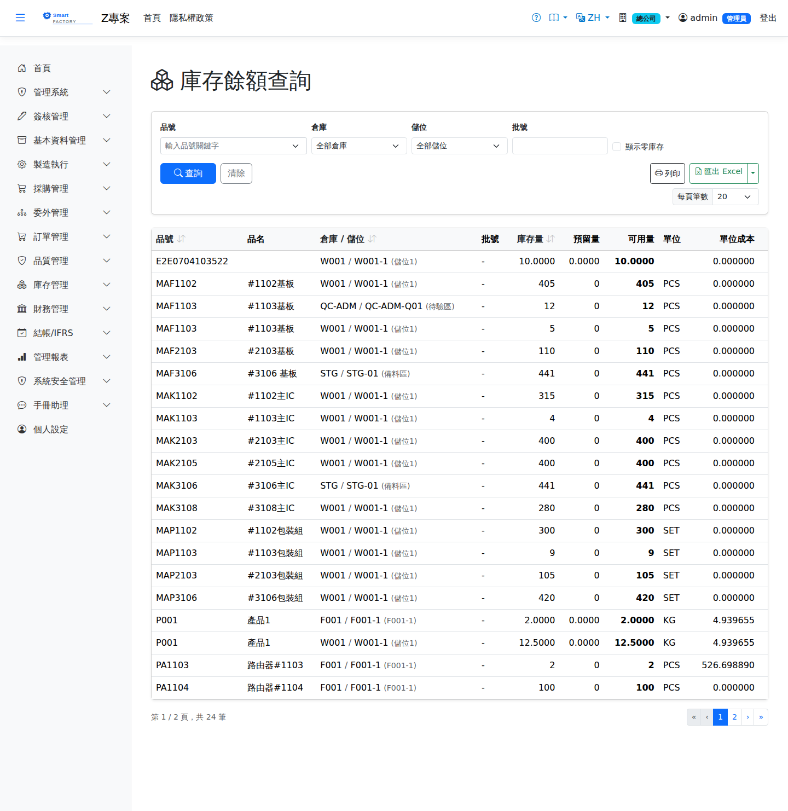

庫存餘額查詢Inventory Balance
依品號 × 倉庫 × 儲位（× 批號）檢視即時在庫量與移動平均單價，並在上方列出本頁品號的全廠預留量與可用量，是日常查料的第一入口，可列印/匯出。Shows live on-hand quantities and the moving average price by product × warehouse × location (× lot), with plant-wide reserved and available quantities for the products on the page listed above. It is the first stop for day-to-day stock enquiries and can be printed or exported.

查詢Search
欄位說明Field reference
查詢條件Query criteria
| 條件Condition | 說明Guide |
|---|---|
| 品號Item | 指定單一料件；留空為全部A single item; leave blank for all |
| 倉庫 / 儲位WH / Location | 限定查詢範圍；選倉庫後儲位下拉只列該倉的儲位Narrows the query; once a warehouse is chosen the location dropdown lists only that warehouse's locations |
| 批號Lot | 批號管制品的批次；留空為全部批次Lot for lot-controlled items; leave blank for all lots |
| 含零庫存Include zero stock | 勾選後連庫存量為 0 的儲位/批號也一併列出，供核對用Once checked, locations and lots with zero stock are listed as well, for checking purposes |
清單欄位List columns
| 欄位Field | 說明Guide |
|---|---|
| 品號 / 品名Product | 料件代碼與名稱Product code and name |
| 倉庫 / 儲位WH / Location | 該筆庫存實際存放的位置Where the stock is actually held |
| 批號Lot | 批號管制品的批次識別；非批管品為空白Lot identifier for lot-controlled items; blank for items that are not lot-controlled |
| 庫存量Stock Qty | 該儲位／批號的實際在庫數量Actual quantity on hand for that location and lot |
| 單位UOM | 庫存計量單位Stock UOM |
| 單位成本Unit Cost | 該批庫存的移動加權平均（AVCO）單位成本Moving average (AVCO) unit cost of that stock |
品號彙總（全廠）Product summary (whole plant)
預留是保留給工單、備料或 MRP 需求的數量，記在「廠 × 品號」，不分儲位，所以不能拆到上面的逐儲位明細，只在這張彙總顯示（每頁列出該頁出現的品號）。算法與缺貨分析、工單投產的料況檢查完全相同。Reservations hold quantities for work orders, staging or MRP demand per plant and product, not per location, so they cannot be split across the location rows and are shown only in this summary (listing the products on the current page). The calculation is exactly the one used by Stock Shortage and the material check at work order release.
| 欄位Field | 說明Guide |
|---|---|
| 全廠在手（不含待驗）Plant on hand (excl. quarantine) | 該品號全廠各儲位在手量合計，不含待驗倉（IQC 未放行不可動用）；客供倉照計Total on hand across the plant, excluding quarantine warehouses (not usable until IQC releases it); customer-supplied warehouses are included |
| 全廠預留Plant reserved | 已被工單、備料或 MRP 需求保留、尚未發料的數量Quantity held for work orders, staging or MRP demand and not yet issued |
| 全廠可用Plant available | 全廠在手 − 全廠預留（下限 0），是新需求實際還能動用的數量Plant on hand − plant reserved (never below 0), the quantity new demand can still draw on |